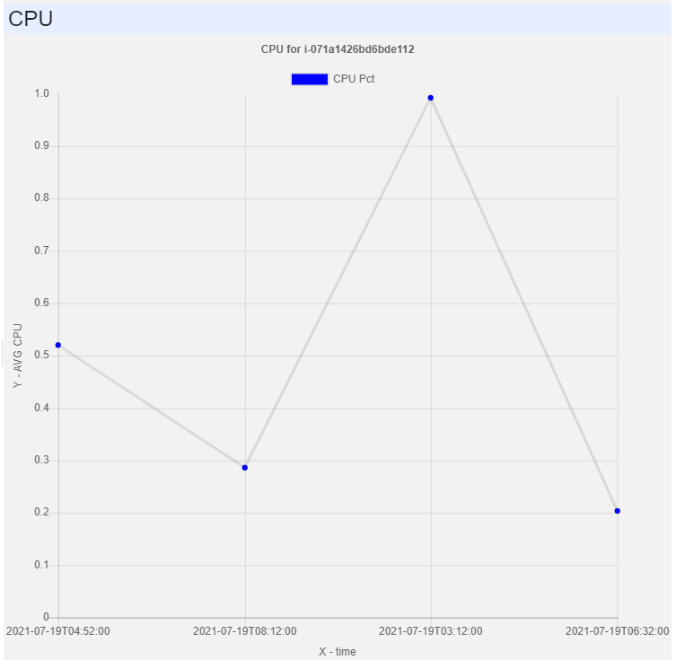

AWS
Download the module and modify ROOT_AWSstub.ps1 - out of the box it lists just the current server. You will probably want to add more from one of the inventories. Contribute more on Github.
The AWS module provides a user without access to the AWS management console with an ability to perform some basic read-only activities:
- to check status (stopped/started) of EC2 instances and their configuration
- to check status of RDS instances
- to get logs from RDS and EC2 and to read console messages
- to browse S3 buckets and files - without the ability to read files (just to check, for example, that a file exists)
- to get CPU charts
The following screenshot gives you an overview of what you can access:
You can get detailed properties of EC2 and RDS:
You can read the console logs of EC2 instances:
For the running RDS and EC2 instances you can check CPU statistics:
For RDS, you can check the logs available on the AWS side (as you can't access them directly):
And finally, you can browse S2 buckets and files inside - without accessing the files, so no sensitive information can leak, but users can check the existence of a file or a backup: